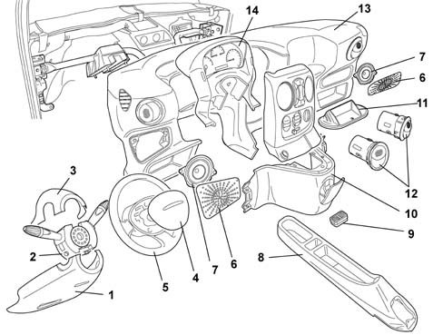

7040A PASSENGER COMPARTMENT TRIMS
- Path
- Descriptions > 70 FITTINGS > 7040 BODY INTERIOR UPHOLSTERY AND TRIM > 7040A PASSENGER COMPARTMENT TRIMS
- Kind
- system description
- Applies to
- all engines; all production periods
- Interactive page
- https://sloeber94.github.io/elrnDB-fDbl/en/#/2582359
Applies to: all engines; all production periods
All car interior trim meets stringent US flammability standards.
The main components are slow-burning: they do not ignite due to accidental contact (for example, if a cigarette is dropped), flames do not develop and, in the presence of fierce heat they burn to produce strong, dense smoke.
The dashboard is a one-piece, modular, symmetrical structure separated into two areas: driver and passenger; The controls are within easy reach and easily accessible. The gearlever is particularly accessible and located in a raised position.
Like all the other car components, it has been designed and manufactured to reduce the effects of impact against the facia in any type of accident.
Its rounded shape and smooth trim is a safety feature and not simply for the sake of appearance.
To avoid vibration and squeaking, anchorage devices should always be checked before refitting and replaced if necessary.
Exploded view of the facia

1, Lower steering column trim
2, Stalk unit
3, Upper steering column trim
4, Driver's airbag module
5, Steering wheel
6, Speaker grille
7, Speaker
8, Tunnel trim
9, Coin holder
10, Underfacia trim
11, Storage compartment flap
12, Central air outlets
13, Facia trim
14, Instrument panel